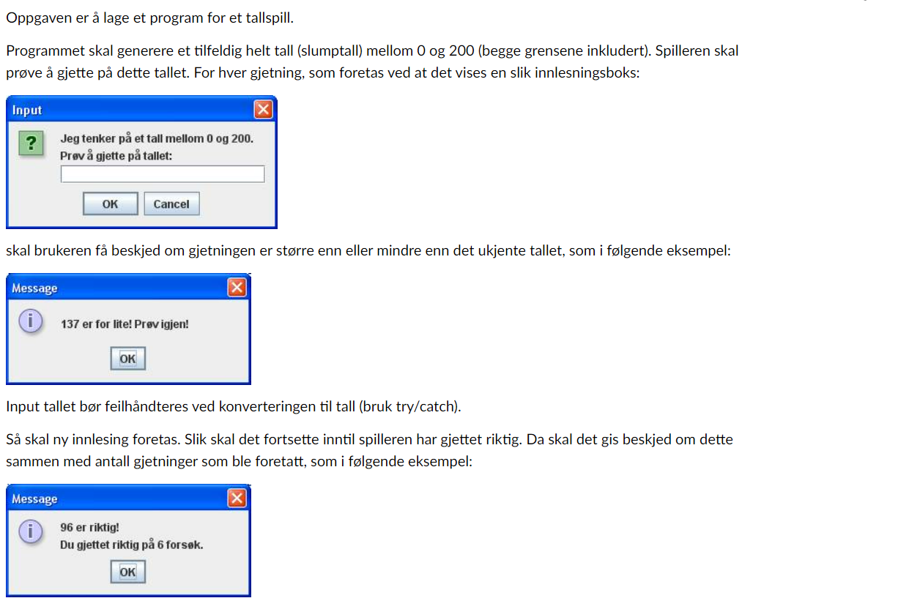
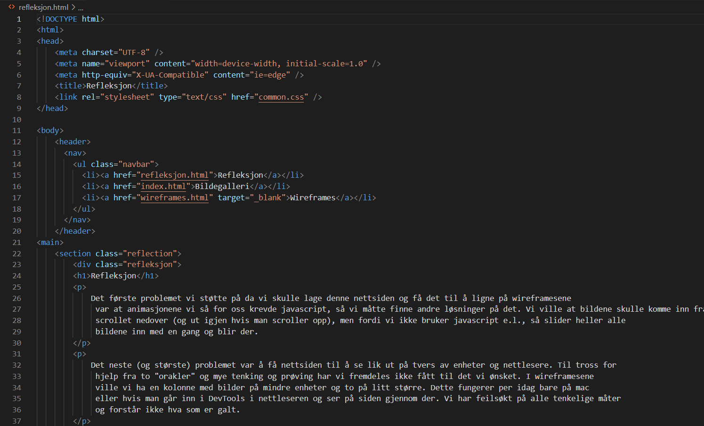
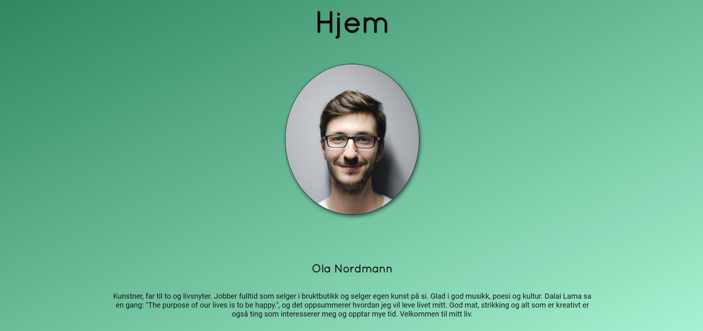

Refleksjon Essay
Studiestart
Høsten 2021 startet vi på første semester på Oslomet, tre av oss går dataingeniør og en går anvendt datateknologi. Nå skulle vi blant annet lære å kode i Java og vi skulle lære html og css. Det er tydelig at det er store forskjeller i tidligere erfaring med koding blant førsteårsstudentene. Personlig hadde jeg tilnærmet null erfaring og fikk en bratt læringskurve. Det var litt vanskelig å forstå fagene i begynnelsen, da det er mye teori og man mangler knagger å henge informasjonen på. Men etter hvert ble det heldigvis mer forståelig, spesielt etter å ha løst oppgaver og deltatt i lab.

Programmering i java
I programmering lærer vi java, og faget er lagt opp sånn at alt materiale ligger ute fra start, og så følger man forelesninger og oppgaver med en modul hver uke. Dette er et opplegg som er enkelt å følge, og man kan ta det raskere eller roligere alt etter hva man synes er lett eller vanskelig. Men utfordringen blir å ha struktur i studiehverdagen så man ikke begynner å henge etter, noe flere av oss har slitt med til tider. Faget var også ganske lett i begynnelsen, men vanskelighetsgraden økte raskt. De obligatoriske oppgavene ble løst i grupper på to, og oppgavene krever at man er ferdig med ukens moduler i canvas. Dette gjorde at det fort ble mye stress før innlevering, men hindret oss også i å havne altfor langt bak.
Tallspill
Den andre obligatoriske oppgaven i programmering var blant annet å lage et tallspill der det blir generert et tilfeldig heltall mellom null og to hundre som spilleren skal prøve å gjette på. Spilleren skulle få beskjed om tallet var for høyt eller for lavt via meldingsbokser. Dette var en vanskelig oppgave, og mye mer omfattende enn øvingsoppgavene vi hadde gjort. Men desto mer gøy når vi endelig fikk det til.
Nettside
Webutvikling og inkluderende design har hatt frie innleveringsoppgaver med mye rom for kreativitet, noe om har vært gøy å jobbe med. En utfordring har vært at vi ikke har lært javascript, kun css, noe som begrenset en del av det vi hadde lyst til å gjøre. Men vi klarte å få til omtrent det vi hadde planlagt likevel. Første oppgave var å lage en nettside med en personlig portfolio. Vi valgte en fiktiv person og fordelte oppgaver mellom alle på gruppen. I oppgave to valgte vi å lage en nettside basert på wireframe, som skulle fungere både på pc og mobil, og skulle justere seg automatisk. Her ble det spesielt vanskelig å unngå å bruke javascript, og vi måtte skrote en del idéer på grunn av dette. Vi endte opp med en løsning der bildene sklir inn fra siden. Vi klarte å lage en fin nettside der alt fungerte som det skulle, men fant plutselig ut at dette ikke fungerte i alle nettlesere og var ikke likt på pc og mac. Dette forble et mysterie etter å ha prøvd å finne feilen i lang tid og etter å ha prøvd å få hjelp av orakel flere ganger.
